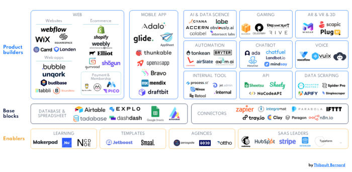

The Low-code Movement
Originally published at https://justiceconder.medium.com/the-low-code-movement-7fcac8c59367

Many agilists begin their journey in software development. This gives them an unusual strength when compared to traditional project managers that lack programming backgrounds. There is a strange full circle happening in this space though. A new generation of software development tools that don’t require heavy coding ability to create apps is appearing on the scene. This classification of tools is covered under the terms low-code and no-code tooling.
“A low-code development platform (LCDP) provides a development environment used to create application software through a graphical user interface instead of traditional hand-coded computer programming. A low-coded platform may produce entirely operational applications, or require additional coding for specific situations. Low-code development platforms reduce the amount of traditional hand-coding, enabling accelerated delivery of business applications.” — Wikipedia

What makes this most relevant to the modern agilists is that they have come from a technical background, have used that technical know-how to design delivery systems and processes and now, with this new generation of tools, are able to implement their delivery patterns in software form. This can be demonstrated through the creation of workflows, reports, or through new automation by connecting APIs together in unforeseen ways.
A Tipping Point
Is this new? Not entirely but we are at a tipping point. The first and second generations of the web made possible the rapid creation and deployment of software. This happened through the consolidation of lean and XP approaches around the banner of “agile” and then it grew into maturity with the arrival of cloud computing, DevOps, and serverless computing. But all of these advances still exclusively revolved around the development team. What makes the Low-code movement so exciting and promising is that it chiefly has to do with empowering product owners. This is a fundamentally different value proposition.
Rapid Prototyping
Every agilist knows how central the idea of feedback loops is to our craft. They form the very basis by which we operate and learn. The low-code movement and technology radically impact and possibly shorten many of these feedback loops. Rather than building a custom solution only to find that there is insufficient market demand, a subject matter expert can build a prototype and validate demand before more scalable solutions are created. This means leaner, faster, and cheaper cycles and is a clear strategic advantage.
Business Superpowers
Another gamechanger introduced by the low-code movement is how it empowers the business owners or the “Product Owner” in an explicitly Scrum context. This is because the person occupying that role knows more than anyone what the business wants and being armed with a few low-code tools enables them to more clearly communicate their goals. This is clearly seen when we look at the fourth principle of Agile which states that “Business people and developers must work together daily throughout the project”. Like so many things in the 21st Century, we are deep into a metaspace on this because the engineering teams end up building tools that business users then use to create what they need before the most desired configuration are then optimized and scaled for large-scale rollout.
Better Utilization of Engineers
One might be tempted to think that what has been stated above undermines the role of engineers but the opposite is true. By keeping engineers focused exclusively on edge case implementation details and optimizations they are leveraged in exactly the areas of their core competencies. By removing the mundane and repetitive pieces of the job through business-facing tooling they free up a lot of other talents to do the more difficult and important aspects of the system. The last mile of automation and configuration is often the most expensive and it’s better to the big guns for that as opposed to creating another form and some buttons.
Go Deeper
We discussed the many aspects of this movement in-depth in a recent episode of The Modern Agilist with Louis Martina. Lou is a heavyweight in the project management space and has become a vocal champion and evangelist of the low-code approach to rapid development and experimentation. I’ve been thinking and writing about these trends for nearly ten years and this episode finally allowed us to sit down with someone to discuss the details and potential impact of being a Citizen Developer through the use of the new emerging tooling. You can listen to the full episode here. Be sure to follow us on LinkedIn or Twitter to get updates and engage in the conversation.
24
24